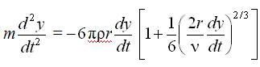
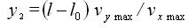

Непрерывную струйную печать более правильно называть каплеструйной, потому что струя чернил не является сплошной, а состоит из множества микроскопических капель.
В каплеструйном принтере (рис. 56) печатающая головка образует непрерывную капельную струю чернил, выбрасываемую под давлением за счет наложения на нее колебаний, получаемых с помощью, например, пьезоэлектрического генератора капель. Под действием переменного электрического напряжения кристалл пьезоэлектрика изменяет свой объем и выталкивает каплю из головки. Чернила под давлением постоянно подаются в печатающую головку из резервуара с помощью насоса. Для получения чернил определенной вязкости этот резервуар соединен с резервуаром растворителя.
С помощью ускоряющего электрода, охватывающего выход из сопла, вылетающие капли приобретают электрический заряд. Таким способом может выбрасываться до миллиона капель в секунду. Их размеры зависят от геометрии сопел-распылителей и могут составлять всего лишь несколько микрон, а скорость, с которой они долетают до бумаги, достигает 40 м/с.
Уравнение движения заряженной капли по направлению к бумажному листу (рис. 57) в промежутке от сопла до ускоряющего электрода определяется уравнением
 |
(6) |
где m - масса капли;
F1 - кулоновская сила притяжения капли к ускоряющему электроду;
F2 - сила сопротивления воздуха.

Подставляя в выражение (6) значения действующих сил, получим
 |
(7) |
где - плотность и кинетический момент вязкости среды;
r - радиус капли;
k 1- некоторый коэффициент;
q - заряд капли;
U - разность потенциалов между соплом и электродом;
l - расстояние от среза сопла до ускоряющего электрода.
Решение уравнения (7) позволяет найти изменение скорости капли в зависимости от приложенного напряжения.
Далее капли пролетают через отклоняющую систему, которая создает электрическое поле высокого напряжения. Так как они имеют заряд, то под действием электрического поля изменяют свою траекторию.
Отклонение капли в направлении, перпендикулярном оси ОХ, возникает за счет подачи напряжения на отклоняющие электроды, а уравнение движения капли при этом имеет следующий вид
 |
(8) |
где U - отклоняющее напряжение;
h - расстояние между электродами.
На участке от отклоняющих электродов до бумаги уравнение движения капли будет иметь вид:
|  |
(9) |
так как отклоняющее напряжение на этом участке не воздействует на каплю.
Суммарное отклонение капли на двух участках будет равно
| (10) |
где y1 - отклонение капли от ускоряющего электрода до конца отклоняющих электродов;
y2 - отклонение капли на участке от конца отклоняющего электрода до бумаги.
Если пренебречь сопротивлением воздуха, то уравнение (8) можно записать в виде:
 |
(11) |
Решая уравнение (11), получим
|
(12) |
где l0 - длина отклоняющих электродов; vx max - максимальная линейная скорость капли в направлении оси ОХ, равная
 |
(13) |
Вторая составляющая отклонения капли определяется формулой
|  |
(14) |
где
 |
(15) |
Таким образом, максимальное отклонение капли будет равно
| (16) |
Генератор изображения управляет направлением полета капель. Они попадают либо на бумагу в нужном месте, либо в уловитель и оттуда в резервуар чернил для повторного использования.
Основное достоинство струйных принтеров с непрерывной печатью - это возможность получать цветное изображение высокого качества. На нем совершенно неразличимы глазом точки, из которых оно сформировано.